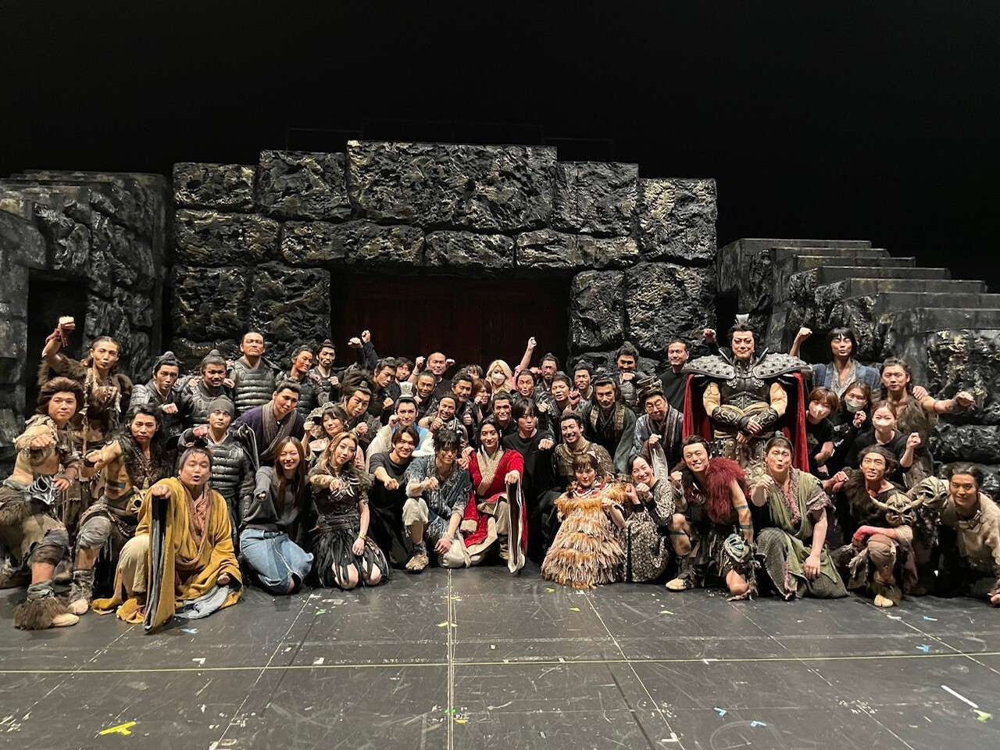
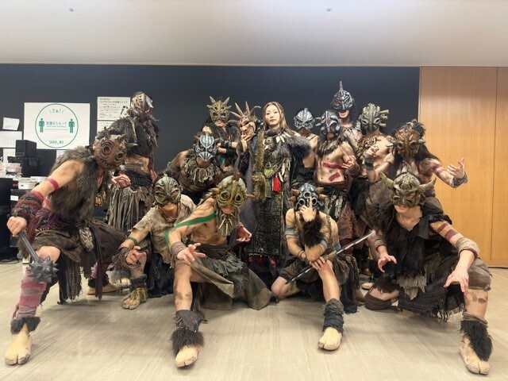
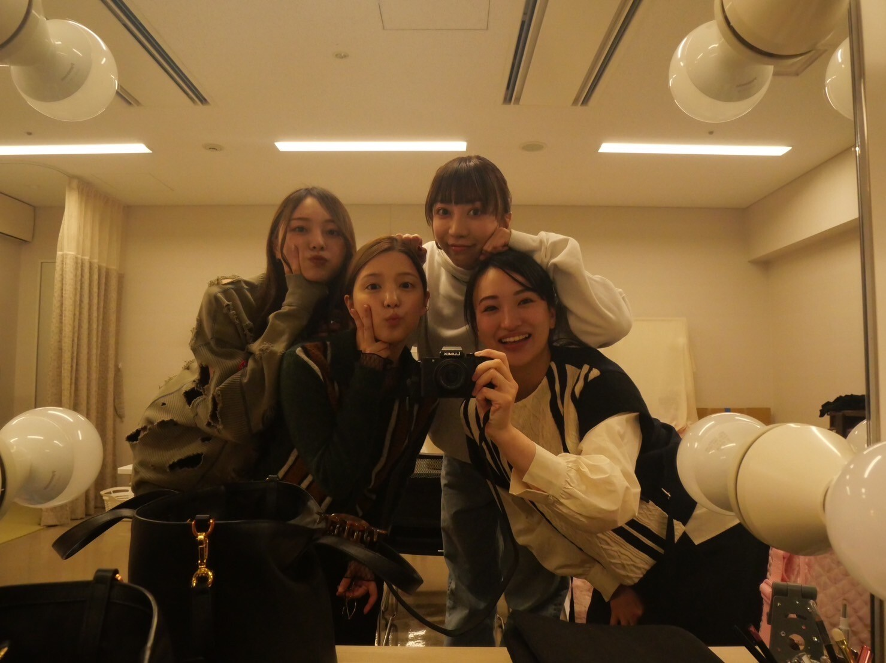

血祭りだ～！
舞台「キングダム」
全公演、終えました。
８２戦、８２勝！
凄まじい達成感で溢れています。

うおーーー
足を運んでくださった皆様、
応援してくださった皆様、
本当にありがとうございました！
いやあ、ほんとに！
半年！半年間の、長旅だったので。
冬から始まり、季節も越えたので
ちょっとまだ寂しいです～
皆、スーパーマンみたいでした！
身体能力はもちろん、人としても！

漫画から出てきたような再現度。
動きも声も逞しさも、
本当に凄かった山の民たちです。
山の民〜ずって、呼ばれてました、キュートですね
去年の夏頃、
扮装姿ではないビジュアル撮影をしたときは
一人目の撮影ということもあり
イメージを膨らませながら
梅澤美波でありつつも
自分の中にある楊端和のような強さを
表情に落とし込めたらと思い
撮影に挑んだのを覚えています。
これは別カット
素晴らしいエンターテイナーの皆様に出会えました。
皆がプロフェッショナル。
その姿に驚かされる事ばかりでした。
１２月から始まった稽古も
本当に初めは探り探り。
まだ空白や余白が多い中で
皆で作っていくあの感覚が鳥肌モノで
ああ、私はこれが好きだったなあ と
思い出しました。
わたしは、初めての殺陣だったので
稽古序盤は本当に、全くできなくて
何度も何度も繰り返し
練習に付き合ってくださった皆さんには
改めて感謝の気持ちが溢れてきます。
強すぎるチームでした！
これだけ激しい舞台を
１公演も欠けることなく
誰一人欠けることなくやり遂げたのは
奇跡のようなことだと思います。
キャストの皆さん、スタッフの皆さんを
心から、尊敬しています。
またどこかで出会えるように、
私はもっと外に出て
色んな事へ挑戦していきたいと、強く思いました。

ダブルキャスト 楊端和役の 美弥るりかさん、
河了貂役 、川島海荷さんと 華優希さん
あまりにも大好きになってしまったので
寂しくて寂しくて仕方ない！
舞台「キングダム」は終わってしまいましたが
皆様の心に深く残る作品であり続けますように。
大好きなこの作品に携わることが出来て
本当に幸せでした！
ありがとうございました。
個人的には約４年ぶりの舞台でした。
ずっと望んでいたからこそ、
ここに賭ける気持ちでした。
舞台もお芝居も、もっと挑戦していきたい！
ここで得たことを、
きちんと次へ、繋げたいです。
繋げないと、意味が無いから、
また良いお知らせができるように、頑張ります。
舞台「キングダム」
来られなかった方は、
先日 札幌にて迎えた大千秋楽の配信映像が
１８日まで観られます。
ぜひ、見て欲しいです～！
こちらから。
帝国劇場 舞台『キングダム』
https://www.tohostage.com/kingdom/stream.html
それでは！
明日は飛鳥さんの卒コン！
うおー！気合い入れて、頑張ります！
Original：https://www.nogizaka46.com/s/n46/diary/detail/101467?ima=4932&cd=MEMBER